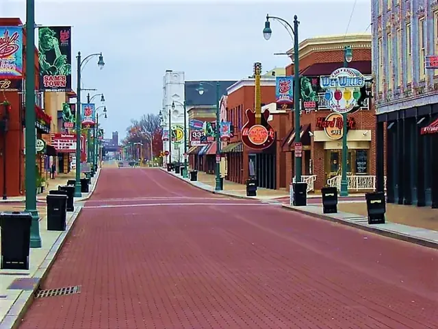
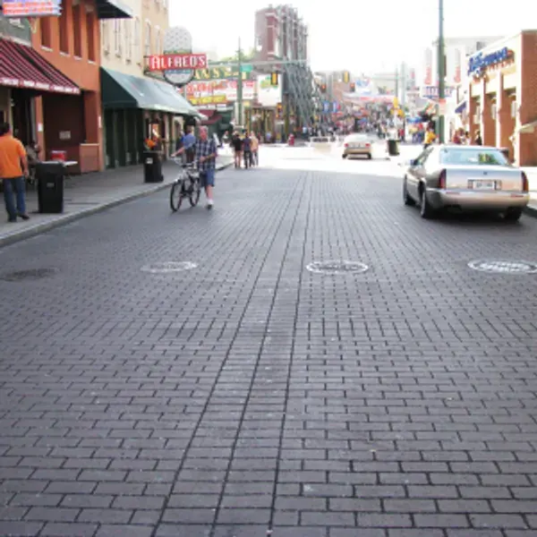
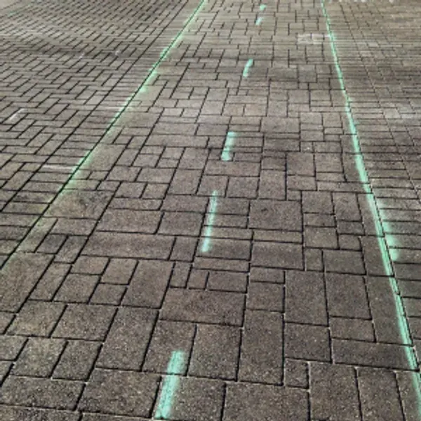
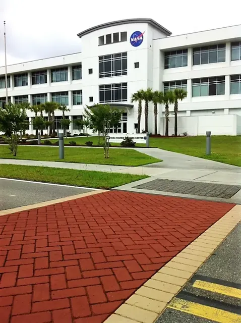
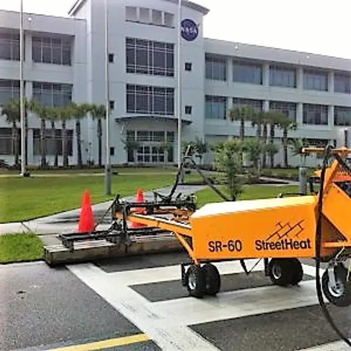
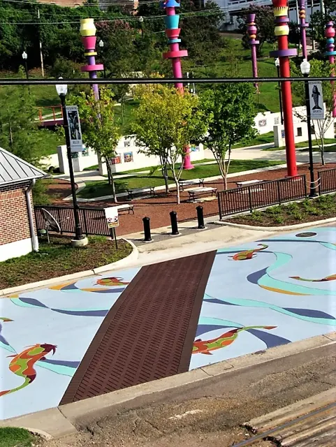
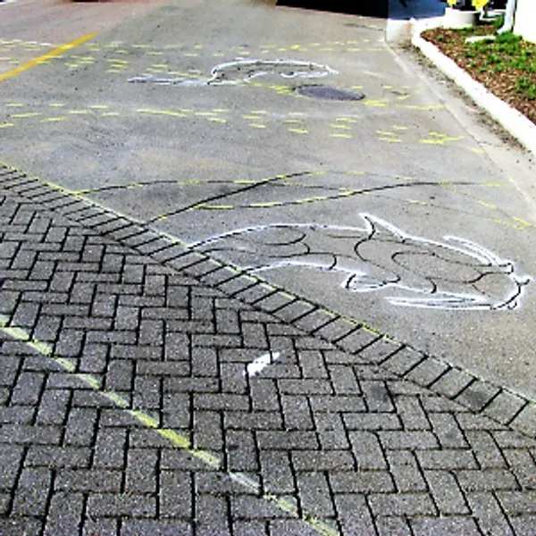

Project gallery
Our work
Stamped asphalt streets, StreetBond plazas, crosswalks, city logos and pavement art — from Dallas and Fort Worth to Memphis, Tulsa and the Mississippi Coast. Tap any photo to view it full size.
Before & after
See the transformation.
Drag the slider on each photo to compare the original pavement with the finished surface.


BeforeAfter
BeforeAfter

BeforeAfter

BeforeAfterLet’s talk about your project
Have a street, plaza or crosswalk in mind?
Tell us what you’re picturing. We’ll help with design, color, materials and budget — and give you a straight answer on what it takes.